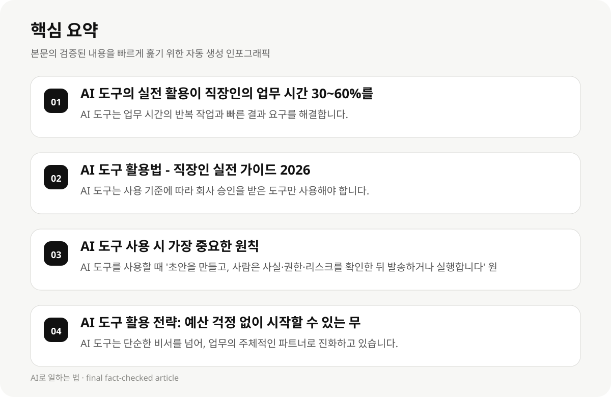

AI 도구의 실전 활용이 직장인의 업무 시간 30~60%를 절약할 수 있는가? #
2026년 직장인 필수 AI 툴 추천 가이드는 AI 도구의 기능, 가격, 활용 방법, 그리고 직장인의 업무 상황에 맞는 최적의 툴을 체계적으로 비교 분석하여, 업무 효율을 극대화하는 데 도움을 드립니다. 이 가이드는 AI 도구의 핵심 기능, 가격, 장단점, 그리고 직장인의 업무 유형에 맞는 추천을 제공하며, 실전 활용 사례와 프롬프트 예시를 통해 실제 적용이 가능합니다.
AI 도구는 단순한 비서를 넘어, 업무의 주체적인 파트너로 진화하고 있습니다. 2026년 AI 생산성 툴 비교에서, ChatGPT, Claude, Gemini의 성향은 각각 다르지만, 무료 티어로도 충분히 시작할 수 있습니다. 이 가이드는 직장인의 업무 상황에 맞는 최적의 AI 툴을 추천하고, 실전 활용 사례와 프롬프트 예시를 통해 실제 적용이 가능합니다.
2026년 AI 생산성 툴 비교에서, ChatGPT, Claude, Gemini의 차이점은 기능, 가격, 사용 편의성 등 다양한 요소로 나타납니다.
AI 도구는 업무 시간의 반복 작업과 빠른 결과 요구를 해결합니다.
- AI 도구는 업무 시간의 반복 작업과 빠른 결과 요구를 해결합니다.
- AI 도구는 단순한 비서를 넘어, 업무의 주체적인 파트너로 진화하고 있습니다.
AI 도구 활용법 - 직장인 실전 가이드 2026 #
AI 도구 활용법 - 직장인 실전 가이드 2026는 직장인의 업무 자동화를 위한 실전 가이드입니다.
AI 도구는 직장인의 반복 업무를 자동화하고, 창의적인 업무를 보조하여 업무 효율을 극대화하는 소프트웨어입니다.
2026년 AI 도구는 직장인의 업무 유형에 따라 다양한 도구를 활용할 수 있으며, 사용 기준과 보안, 신뢰를 고려하여 실무 적용이 가능합니다.
AI 도구는 단순한 비서를 넘어, 업무의 주체적인 파트너로 진화하고 있습니다.
- AI 도구는 사용 기준에 따라 회사 승인을 받은 도구만 사용해야 합니다.
- 민감 정보는 반드시 입력하지 않아야 하며, 사용 기준에 따라 회사 승인을 받은 도구만 사용해야 합니다.
AI 도구 사용 시 가장 중요한 원칙 #
AI 도구를 사용할 때 가장 중요한 원칙은 '초안을 만들고, 사람은 사실·권한·리스크를 확인한 뒤 발송하거나 실행합니다'입니다.
결재·구매·계약·인사·법률 판단은 자동 실행하지 않는 것이 안전합니다.
- AI 도구를 사용할 때 '초안을 만들고, 사람은 사실·권한·리스크를 확인한 뒤 발송하거나 실행합니다' 원칙을 준수해야 합니다.
- 결재·구매·계약·인사·법률 판단은 자동 실행하지 않는 것이 안전합니다.

AI 도구 활용 전략: 예산 걱정 없이 시작할 수 있는 무료 티어 #
2026년 AI 생산성 툴 추천 가이드는 AI 도구의 핵심 기능, 가격, 장단점, 그리고 직장인의 업무 유형에 맞는 최적의 툴을 체계적으로 비교 분석하여, 업무 효율을 극대화하는 데 도움을 드립니다. 이 가이드는 AI 도구의 핵심 기능, 가격, 장단점, 그리고 직장인의 업무 유형에 맞는 추천을 제공하며, 실전 활용 사례와 프롬프트 예시를 통해 실제 적용이 가능합니다.
AI 도구는 단순한 비서를 넘어, 업무의 주체적인 파트너로 진화하고 있습니다. 2026년 AI 생산성 툴 비교에서, ChatGPT, Claude, Gemini의 성향은 각각 다르지만, 무료 티어로도 충분히 시작할 수 있습니다.
- AI 도구는 단순한 비서를 넘어, 업무의 주체적인 파트너로 진화하고 있습니다.
- 2026년 AI 생산성 툴 비교에서, ChatGPT, Claude, Gemini의 성향은 각각 다르지만, 무료 티어로도 충분히 시작할 수 있습니다.
- AI 도구는 업무 시간의 반복 작업과 빠른 결과 요구를 해결합니다.
AI 도구 활용 사례와 프롬프트 예시 #
AI 도구 활용 사례와 프롬프트 예시는 직장인의 업무 상황에 맞는 최적의 AI 툴을 추천하고, 실전 활용이 가능하도록 구성됩니다. 예를 들어, AI 도구는 업무 시간의 반복 작업을 줄이고, 빠른 결과를 도출하는 데 도움을 줄 수 있습니다.
AI 도구는 단순한 비서를 넘어, 업무의 주체적인 파트너로 진화하고 있습니다. 2026년 AI 생산성 툴 비교에서, ChatGPT, Claude, Gemini의 성향은 각각 다르지만, 무료 티어로도 충분히 시작할 수 있습니다.
- AI 도구 활용 사례와 프롬프트 예시는 직장인의 업무 상황에 맞는 최적의 AI 툴을 추천하고, 실전 활용이 가능하도록 구성됩니다.
- AI 도구는 단순한 비서를 넘어, 업무의 주체적인 파트너로 진화하고 있습니다.
- 2026년 AI 생산성 툴 비교에서, ChatGPT, Claude, Gemini의 성향은 각각 다르지만, 무료 티어로도 충분히 시작할 수 있습니다.
AI 도구 활용의 한계와 실패 사례 #
AI 도구 활용의 한계는 기술적 한계, 사용자 맞춤화의 어려움, 그리고 업무 환경의 변화에 따라 달라질 수 있습니다. 실전 활용 시, AI 도구의 한계를 고려하여, 적절한 선택이 필요합니다.
AI 도구는 단순한 비서를 넘어, 업무의 주체적인 파트너로 진화하고 있습니다. 2026년 AI 생산성 툴 비교에서, ChatGPT, Claude, Gemini의 성향은 각각 다르지만, 무료 티어로도 충분히 시작할 수 있습니다.
- AI 도구 활용의 한계는 기술적 한계, 사용자 맞춤화의 어려움, 그리고 업무 환경의 변화에 따라 달라질 수 있습니다.
- AI 도구는 단순한 비서를 넘어, 업무의 주체적인 파트너로 진화하고 있습니다.
- 2026년 AI 생산성 툴 비교에서, ChatGPT, Claude, Gemini의 성향은 각각 다르지만, 무료 티어로도 충분히 시작할 수 있습니다.
AI 도구 활용의 전략과 실행 단계 #
AI 도구 활용 전략은 예산 걱정 없이 시작할 수 있는 무료 티어를 강조하며, 실전 활용 사례와 프롬프트 예시를 통해 실제 적용이 가능합니다. 이 가이드는 AI 도구의 핵심 기능, 가격, 장단점, 그리고 직장인의 업무 유형에 맞는 최적의 툴을 추천하고, 실전 활용 사례와 프롬프트 예시를 통해 실제 적용이 가능합니다.
AI 도구는 단순한 비서를 넘어, 업무의 주체적인 파트너로 진화하고 있습니다. 2026년 AI 생산성 툴 비교에서, ChatGPT, Claude, Gemini의 성향은 각각 다르지만, 무료 티어로도 충분히 시작할 수 있습니다.
- AI 도구 활용 전략은 예산 걱정 없이 시작할 수 있는 무료 티어를 강조하며, 실전 활용 사례와 프롬프트 예시를 통해 실제 적용이 가능합니다.
- AI 도구는 단순한 비서를 넘어, 업무의 주체적인 파트너로 진화하고 있습니다.
- 2026년 AI 생산성 툴 비교에서, ChatGPT, Claude, Gemini의 성향은 각각 다르지만, 무료 티어로도 충분히 시작할 수 있습니다.